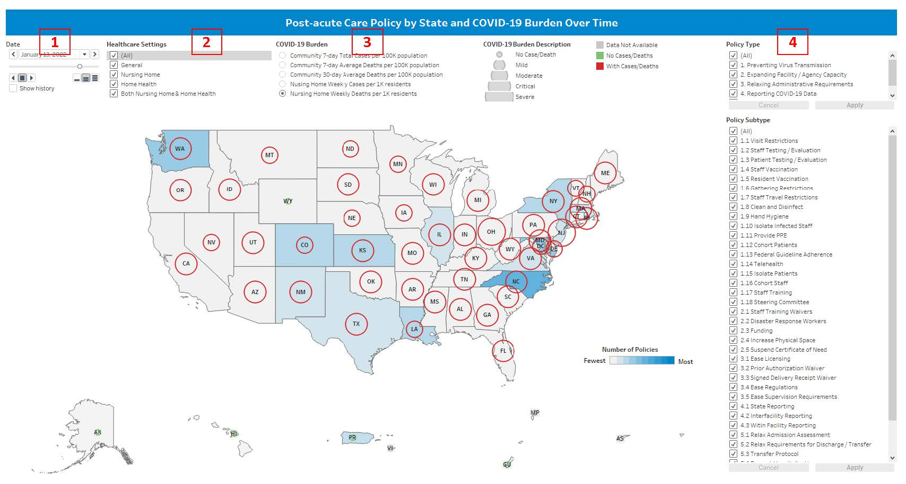
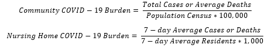

Our COVID-19 policy for post-acute care database and dashboard are free resources for public health officials and researchers. These provide a comprehensive overview of state/territory-level responses to COVID-19 regarding post-acute care facilities and the association with COVID-19 cases and deaths. They can serve as a template for future real-time public health platforms that may inform efforts to manage future pandemics.
This database was collected by researchers at Center for Health Policy, School of Nursing, Columbia University Irving Medical Center. As of July 2023, the database has been collected and constructed with a policy time span from March 1, 2020 to July 1, 2022 based on state/territory-level. The dashboard has been constructed based on the dataset since Nov 2023, and it has been made published on our website page since [Jan 2024]
Our page includes an interactive policy map providing geospatial visualization of the policies implemented over time. Policies can be viewed by any combination of healthcare settings, policy types and subtypes (see Methods part for detailed information about these types and subtypes). Five COVID-19 outcomes can be selected by viewers including community 7-day total cases, community 7-day average deaths, community 30-day average deaths, nursing home 7-day average cases, and nursing home 7-day average deaths.
This dashboard is publicly available and the dataset is available for researchers and public health officials, with appropriate reference and acknowledgement of the original research team. If you want to get the dataset resource, please fill out our questionnaire or contact us at [nursing_across-care@cumc.columbia.edu] for information.
On the dashboard surface (Figure 1), there is a large map with 48 states in the middle, which users can zoom or pan. Below the main map, there are five small areas, including Alaska, Hawaii, Puerto Rico and Virgin Island, Guam and Northern Mariana, and American Samoa, which have fixed sizes. On the maps, colors represent the number of policies in each state, with yellow indicating the fewest and blue indicating the most. Circles stand for COVID-19 burden, with largest indicating severe COVID-19 burden and the smallest indicating no cases or deaths. Circles colored in green stand for no cases or deaths, while red stand for with cases or deaths (see Methods part for detailed information). Additionally, for nursing home COVID-19 burden, gray circles indicate that there is no available data at that time. Users are also encouraged to hover over the circles in the map to get detail policy counts for each policy subtypes in each state.
The dashboard was designed to be interactive for users. On the top left corner (Area 1 on Figure 1), it is allowed users to select date or play animation using the buttons. This makes it easy to view the trend of policies during pandemic periods. Users are also able to select different healthcare settings in Area 2, which allows the users to view policies addressing for each healthcare setting. In the Area 3, users are allowed to select one type of COVID-19 burden. It is strongly recommended users to select nursing home COVID-19 burden if focusing on nursing home policies. In the Area 4, users can select each types and subtypes of policies, which will result in a change in map view.

Figure 1 The overview of policy dashboard
Policy Identification
For this dataset, the Council of State Government’s (CSG) website, “2020-2021 State Executive Orders – COVID-19 Resources for State Leaders,”1 was the initial source for identifying state/territory-based COVID-19 policies since the state/territory executive orders were already consolidated and classified. Firstly, post-acute care-related policies were identified under the CSG classification of “Assisted Living/Nursing Home/Long-Term Care Facilities”. Building on the work of others,2 these policies were then organized in our dataset under one of five broad categories: 1) preventing virus transmission, 2) expanding facility/agency capacity, 3) relaxing administrative requirements, 4) reporting COVID-19 data, and 5) admission/discharge policies. These policies were then further divided into smaller more specific subcategories (n = 38) guided by the policy intention.
A subsequent Google search was conducted, revealing limitations of the CSG website. The CSG website did not identify COVID-19 policies aimed at healthcare settings in general, as well as extensions and line-by-line modifications of already-identified policies. A detailed internet search was conducted for each U.S. state and territory (50 U.S. states, District of Columbia, Puerto Rico, U.S. Virgin Islands, Guam, Northern Mariana Islands and American Samoa). Policies collected previously from the CSG website were verified for accuracy and end dates of policies were added, considering any extensions. New policies that were identified during the search, as well as modifications to previously-collected policies, were added to the dataset. We also identified policies aimed at general healthcare settings (not naming nursing homes or home healthcare agencies specifically) that fit our predetermined categories and subcategories. Searches were conducted in the order of a state/territory’s FIPS code using terms such as “[state/territory name]” in combination with “COVID-19 policies”, “executive orders”, “public health orders” and “governor office news briefings”. Through these searches, we learned that individual states/territories have their own methods of organizing and archiving COVID-19-specific policies; some states/territories had very organized archives by date and are searchable by topic, while others removed any policies relating to a previous gubernatorial administration if an election had occurred. If policies were not archived on the official government site, we attempted to locate the policies in place during a previous administration on other websites or on the internet archive (via Wayback Machine).
Policy Categorization
Executive Orders and Public Health Orders provided specific information regarding which policies were enacted and what time period they were effect. Government Office News Briefings were useful in identifying policies for states that did not archive their orders; the briefings also provided additional context to specific political actions and their intended outcomes. Collectively, this information was used to create a dataset of policies addressing COVID-19 mitigation in post-acute care settings that takes into consideration policies aimed at healthcare settings in general and includes the actual date in which a policy is no longer in effect.
For each policy, the following data was collected in Excel3: start date, end date, policy type, policy sub-type, application to healthcare setting(s), source, website link, and comments. The start dates of each policy were stated in executive orders and public health orders or when a new policy was enacted to replace a prior policy. The end dates of specific policies were listed based on their original end date. Policy extensions were added as a different row and highlighted to differentiate them from the original policy. This process followed until a final expiration date occurred due to either non-renewal of the policy or replacement by a new policy. Modifications were treated as new policies (new Excel row) if the wording of the policy changed appreciably. Furthermore, if a policy was allowed to expire and was not included in an extension within 2 weeks (allowing for any backdating), any subsequent extension was added as a new row and was treated as a new policy to account for the time gap. In the final dataset, the extensions were collapsed into the original policy, date ranges for each extension were added in a comment, and the original policy received a new end date. The application of the policy was determined as either “General”, “Nursing Homes (NH) Only”, “Home Healthcare Agencies (HHA) Only” or “Both NH & HHA”. Policies that address healthcare settings as essential businesses, but do not explicitly mention nursing homes or home healthcare agencies were listed as “General”. Policies that specifically address nursing homes were listed as “NH Only” and policies that specifically address home healthcare agencies were listed as “HHA Only”. Policies that address both nursing homes and home healthcare agencies were categorized as “Both NH & HHA”. One team member categorized and another team member confirmed the categorization; if categorization differed, discussion with other team members occurred until consensus was reached. The source was listed as the title of the specific policy or news briefing being referenced; a link to the source was also listed. Comments included a brief description of the specific policy that supports its categorization under a specific policy type and subtype. Overall, 1,400 policies were included in the final policy dataset.
Data Manipulation and Integration
The final policy dataset was imported into R 4.3.1.4 The number of unique policies that were effective for each day within a state/territory was counted by each type, subtype and healthcare setting. This process resulted in a dataset that exclusively presented the number of policies for each subtype, type and healthcare setting by state /territory and date, from March 1, 2020, to July 1, 2022. Additionally, a new variable capturing the maximum counts of policies for each subtype, type and healthcare setting among dates and states/territories was also generated for visualization purposes.
To visualize relationships between COVID-19 burden and policy formulation and impact, five COVID-19-related outcomes were selected, encompassing both community-level outcomes and nursing home-level outcomes. Community outcomes served as indicators for assessing the overall COVID-19 trend and any associations between COVID-19 burden and policy making. These outcomes included 7-day total cases, 7-day average deaths and 30-day average deaths, which were calculated based on the state/territory-level COVID-19 database from the New York Times.5 Furthermore, those outcomes were weighted based on 2020 population census data at the state/territory level,6 resulting in variables that reflect community COVID-19 burden per 100,000 population (Figure 2). Nursing home-specific outcomes, including weekly nursing home cases or deaths per 1,000 residents, were aggregated to the state level using COVID-19 nursing home data from the National Healthcare Safety Network (NHSN)7; these outcomes assume the number of cases and deaths remain constant over seven days within one week. The COVID-19 outcome data were merged with the state/territory-level policy dataset by state/territory and date.

Figure 2 COVID-19 Burden Calculation
Dashboard Development in Tableau
The merged dataset was imported to Tableau Desktop 2023.2 for dashboard development.8 A dual-axis map sheet was formulated, within which the number of policies is represented by color. To better visualize the policy counts, we utilized a gradient of 10 colors, measuring deciles of policy counts relative to the maximum policy counts. Consequently, the color “grey” denoted the fewest policies, while “dark blue” represented the highest count of policies. The dashboard with the date slider allows users to view the trends in policy counts from March 1, 2020, to July 1, 2022.
COVID-19 burden is depicted as circles on the map. A parameter was created in Tableau to allow dashboard users to select one of the five outcomes: 1) total community-level COVID-19 cases per 100,000 population over 7 days; 2) average community-level COVID-19 deaths per 100,000 population over 7 days; 1) average community-level COVID-19 deaths per 100,000 population over 30 days; 4) weekly nursing home cases per 1,000 residents; and 5) weekly nursing home deaths per 1,000 residents. The severity of the burden was stratified into five categories, with an exclusive category for no cases or deaths. The rest was divided into quartiles that were categorized as “Mild”, “Moderate”, “Critical”, and “Severe”. The severity can be visualized by the diameter of the circle, with the largest indicating severe burden and the smallest denoting “no cases or deaths”. States/territories with “no cases or deaths” have green circles, those “with cases or deaths” have red circles, and those with “data not available” for nursing home outcomes before May 17, 2020 have grey circles. Four filters can be applied to the map, including date, healthcare setting, and policy type and subtype (organized in a hierarchy).
To construct the dashboard, the original map sheet was duplicated into six different sheets, each illustrating different regions: U.S. mainland, Alaska, Hawaii, Puerto Rico and Virgin Islands, Guam and Northern Mariana Islands, and American Samoa. These sheets were combined into one dashboard with four filters, the COVID-19 outcome parameter, and a legend. Users have the flexibility to view the map by date, healthcare setting, COVID-19 burden, policy type and policy subtype. This finalized dashboard was uploaded and published using Tableau Public, accessible on our website.